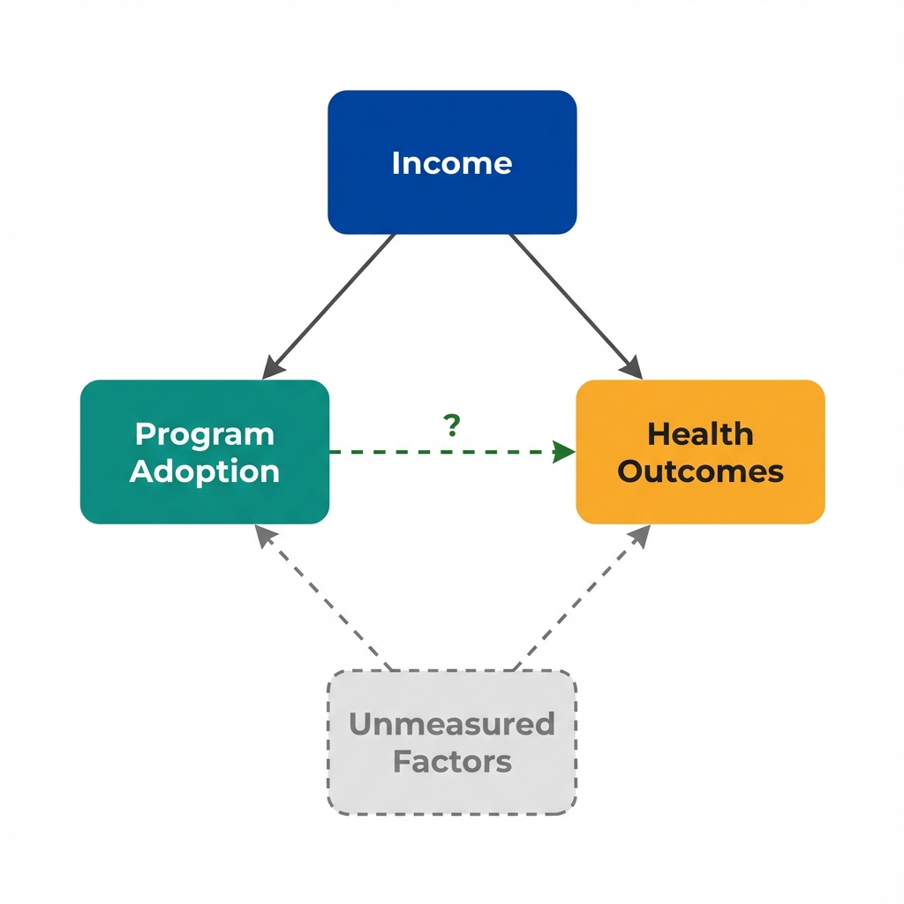

The Data
Some California counties adopted a chronic disease management program. Counties with the program have lower diabetes hospitalization rates. The correlation is clear. The causation is not. (Data are simulated for illustration.)
Hospitalization Rate by Income Level
Next: Why might wealthier counties both adopt the program AND have better outcomes?
The Problem
We adjust for confounders to isolate the treatment effect. Economics makes this goal precise: is treatment independent of potential outcomes? The answer determines whether adjustment helps or hurts.
The Causal Structure

Income affects both program adoption and health outcomes, creating a spurious association.
Confounding
A third variable causes both treatment and outcome. The association we observe is partly (or entirely) due to this common cause.
"Adjust for the confounder C."
"Is treatment assignment independent of potential outcomes, conditional on C?"
Selection Bias
People or places self-select into treatment based on factors related to the outcome. Selection can happen before or after treatment.
"Control for observed characteristics."
"What variation in treatment is unrelated to potential outcomes? Can we isolate that variation?"
The Independence Condition
For causal inference, we need treatment to be independent of potential outcomes. This means:
- What would happen to a unit if treated should not predict whether it actually gets treated
- Conditional on observables, treatment assignment is "as good as random"
- No unmeasured factors that affect both treatment and outcome
When this condition holds, adjustment works. When it fails, adjustment can make bias worse.
Next: When exactly does adjusting for a variable fix the problem?
When Adjustment Works
Statistical adjustment removes confounding when we can measure and control for all common causes. The key is understanding the causal structure.
The Scenario
Income affects both program adoption and health outcomes. Wealthier counties are more likely to adopt programs and have healthier populations.
The association between program and outcomes reflects this common cause.
The Solution
If we measure income accurately and include it in our model, we block the backdoor path.
We compare program vs non-program counties with similar incomes. The remaining difference reflects the program effect.
Adjustment Works
When we observe and control for all common causes, adjustment removes confounding. The adjusted estimate is unbiased.
The Scenario
Counties with stronger public health departments both adopt more programs and implement them better. Department capacity drives the selection.
If we can measure capacity (staff, budget, infrastructure), we can address this selection.
The Solution
We measure public health department capacity through observable metrics.
Comparing counties with similar capacity levels isolates the program effect from the capacity effect.
Adjustment Works
Selection based on observables can be addressed through matching or regression adjustment, as long as we measure the right variables.
Selection on Observables
Selection on observables means that all factors affecting treatment selection are measured in our data. Formally:
- Treatment assignment depends only on variables we can see
- Conditional on these variables, treatment is "as good as random"
- No hidden factors systematically push certain types into treatment
This is the assumption behind propensity score matching, inverse probability weighting, and regression adjustment.
Next: What happens when selection depends on factors we cannot measure?
When Adjustment Fails
Statistical adjustment cannot fix every problem. In some cases, controlling for a variable makes bias worse. Understanding when adjustment fails is essential for credible causal inference.
The Scenario
Counties with more health-conscious populations both adopt more programs and have better outcomes. But we cannot measure "health consciousness" directly.
Even after adjusting for income and education, this unmeasured factor creates bias.
Why Adjustment Fails
No amount of controlling for observed variables eliminates the bias from unmeasured confounders.
The adjusted estimate still reflects the unmeasured factor, not the true program effect.
Adjustment Fails
Unmeasured confounding means the independence condition is violated. Standard adjustment methods cannot fix this.
The Scenario
Suppose we only study counties that received evaluation funding. Funding depends on both having a program AND having poor outcomes (to justify evaluation need).
"Evaluation funding" is a collider, caused by both treatment and outcome.
Why Adjustment Fails
Conditioning on a collider opens a spurious path between treatment and outcome.
Among funded counties, the program appears harmful. Controlling for funding makes things worse, not better.
Adjustment Backfires
Adjusting for colliders creates bias where none existed. The solution is to not condition on effects of treatment or outcome.
The Scenario
The program works by improving access to care. Access to care is a mediator: the program causes improved access, which causes better outcomes.
If we adjust for access, we block the causal pathway.
Why Adjustment Fails
Controlling for a mediator removes the mechanism through which treatment works.
The total effect of the program is understated because we blocked the very path we want to measure.
Adjustment Removes the Effect
Adjusting for mediators blocks the causal pathway. This is sometimes appropriate (for direct effects) but often removes the effect of interest.
The Economist's Solution
No amount of statistical adjustment can fix a flawed comparison. When unmeasured factors drive both treatment and outcomes, the solution is not better adjustment.
The solution is finding sources of treatment variation that operate independently of unmeasured confounders. Policy changes, eligibility cutoffs, randomization, and timing differences can provide this.
This is what economists mean by "identification."
Next: What questions should we ask before trusting an adjusted estimate?
Questions to Consider
These questions help identify when adjustment works and when it fails. They will not prove causation, but they reveal where the analysis is most vulnerable to bias.
What drives treatment assignment?
List all factors that might affect whether a unit receives treatment. Are they all measured? If any are unmeasured, adjustment alone cannot solve the problem.
Is the control variable a confounder, mediator, or collider?
Draw the causal structure. Confounders should be controlled. Mediators typically should not (unless you want direct effects). Colliders should never be controlled.
Would randomization change who gets treated?
If randomization would produce very different treatment groups than what we observe, selection on unobservables is likely strong. Adjustment assumes selection is on observables only.
What is the source of identifying variation?
After conditioning on controls, what creates variation in treatment? If the remaining variation still correlates with potential outcomes, the estimate is biased.
Could we use a different design?
Consider whether policy changes, natural experiments, discontinuities, or instrumental variables could provide variation that is more plausibly independent of potential outcomes.
The Key Takeaway
Adjustment for observables is a tool, not a solution. It works when selection is on measured variables. It fails when selection is on unmeasured factors.
The discipline of causal inference comes from honestly assessing what we can and cannot control for, and seeking research designs that make the independence assumption more credible.